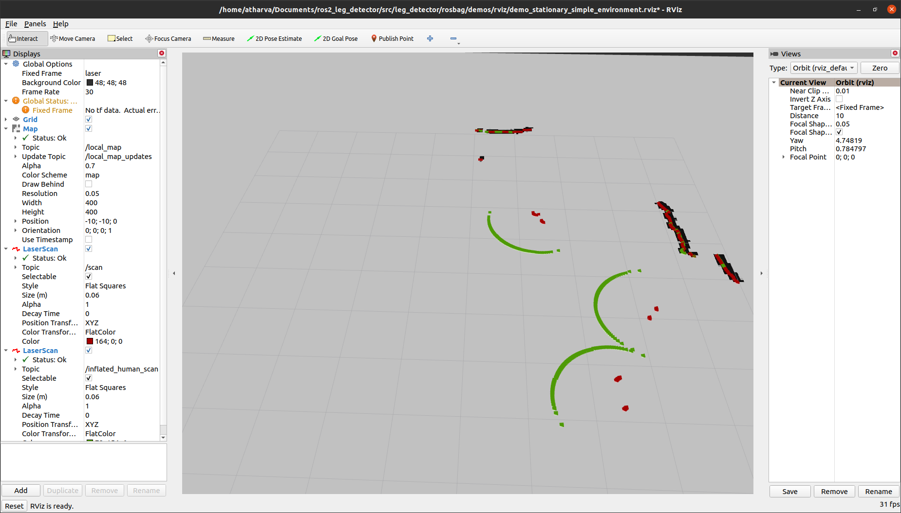
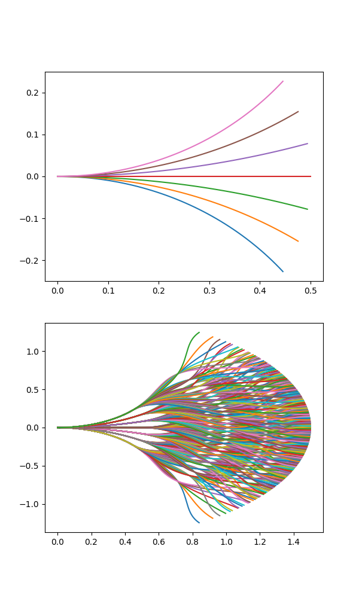
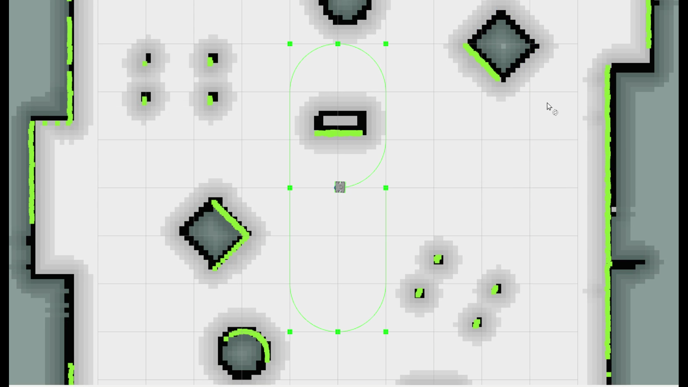
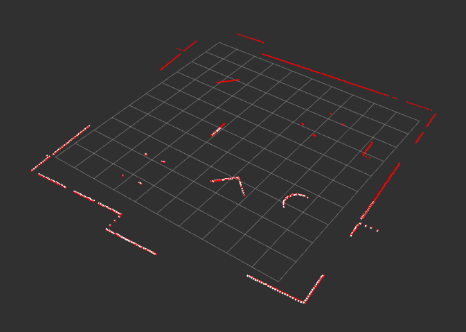
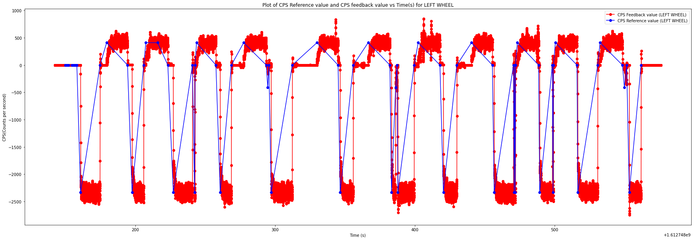
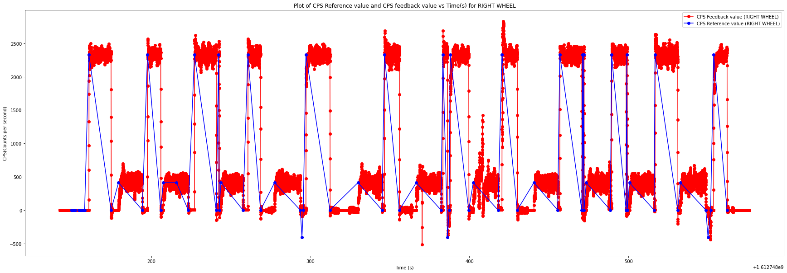
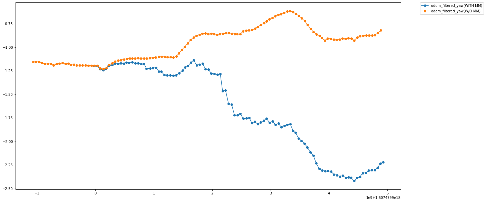
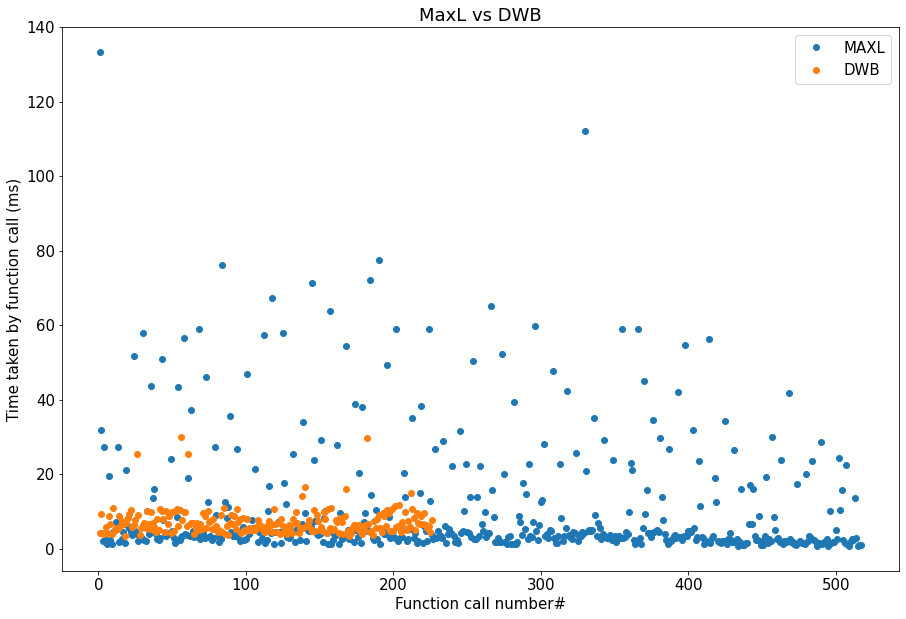
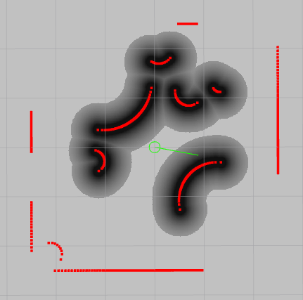

Internship at Mowito Robotics
Mowito is an Indian startup that provides autonomous navigation software solutions for use in warehouses and more. The company has also recently expanded into providing physical robots with applications such as grocery delivery.
Mowito being a startup, provided me a lot of avenues to learn new things. The work ranged from robot navigation, lidar stitching to cloud computing. Often the work involved projects that either the team or nobody in the entire world has experience working. This helped me quickly adapt to situations and learn new things in a short time, often required for an early-stage startup. I had great mentors who bestowed me with the responsibility to directly work on their navigation stack - their core offering that is used in warehouse environments by companies around the world. The stack was being directly deployed on ROS-based robots that were being remotely monitored by us. Under the mentor’s guidance, I was able to learn agile project management, startup accelerators, how to manage people in a company.
A short video showing some of the deployments using Mowito’s navigation stack:
In this blog, I will be presenting the work done by me during the internship.
Human feet detection
We ported the ROS leg-detector package to support ROS 2 while making it more reliable and accurate. The package was required by one of our clients to detect workers in their warehouses. The load-carrying robot changes its global trajectory if it encounters a dynamic obstacle.

For the above demo, we used an RPLIDAR, with a resolution of 0.33 degrees at 10 Hz. The lidar map was converted to an image array to detect human foot clusters. After data association with existing foot position priors, the extended Kalman filter was updated from the measurements.
Oh, by the way, the ROS Discourse post was featured in ROS News for the Week of January 10th, 2021 - https://discourse.ros.org/t/ros-news-for-the-week-of-january-10th-2021/18488.
Motion Primitives Generation
The maxl controller developed by Mowito uses motion primitives to generate local paths for navigation. The motion primitives are computed using the robot dimensions, path fan angle, expand distance, and more.
Here’s a GIF showing possible paths for a robot using motion primitives:

The primitives are generated using a nearest-neighbor query approach using the SciPy’s KDTree module to achieve linear-logarithmic time complexity. The KD tree is used to find the nearest data points in n-dimensional NumPy arrays. Further, using basic trigonometry, the paths are generated.
Link to the tool - http://ec2-15-207-68-243.ap-south-1.compute.amazonaws.com/
Here’s how the primitives look like: 
Improvements to MaxL controller

I also worked on the core MaxL navigation stack and the controller. My initial work was related to improving the function stubs to get myself more familiar with the codebase. After that my contributions were to reduce the number of oscillations in the planned path, architecture improvements, automated testing, and benchmarking. The controller previously had some code duplication between ROS 1 and 2, I decoupled the core library (the pure pursuit controller and some other stuff) and made it into a single CMake package which is now used by the ROS 1 and 2 packages as a CMake subdirectory. This greatly saved development time, and a developer needed to only make changes to one repository to improve both ROS 1 and 2 implementations.
Some other improvements included grouping similar function parameters into a single struct to reduce the number of parameters being passed into the functions. Some functions previously had as many as 60 parameters for path planning. Consequently, they hover around 12 now (Structs hold the individual values).
Sensor calibration and fusion
I had the opportunity to also work on the client-facing services at Mowito. Some packages developed by me served to calibrate wheel encoders for differential drive robots and fusing point clouds from multiple lidars.
-
LiDAR fusion: A ROS 2 package for fusing data provided by multiple lidars placed on a robot.
GitHub repository: https://github.com/mowito/mw_lidar_fusion.
The point clouds are fused using the TF transform between two link frames, and matching ROS messages by the time.
Here’s a demo showing two fused point clouds with white points depicting data points that fall within a certain angle after filtering:

-
Wheel encoder calibration: Our deployments often needed periodic manual maintenance to function well. One recurring problem was a deviation in the pose estimated using wheel odometry. Due to wheel slip and other factors, a bias was introduced in the system that led to the robot going way off track from its goal position. This was a critical issue since these robots were handling fragile pieces of equipment in the warehouses.
GitHub repository: https://github.com/mowito/odometry_calibration
Here are the plots for reference count per second vs wheel encoder feedback value for both left and right wheels:  
The wheel encoders didn’t perform well whenever a sudden change in motion was observed. A correction factor is thus introduced while calculating the robot angular velocity or the yaw rate.
Odometry plot after yaw correction: 
MaxL vs Nav2 DWB
If you have read so far, then you might probably wonder - why use a proprietary controller instead of an already widely used one such as DWA/DWB offered by ROS Navigation?
Well, the answer is that in some cases you might want to leverage the reduced computational cost of running the MaxL controller - it runs without using a cost map! Another benefit is that in most cases, MaxL provides more smooth paths and fewer recoveries during the robot’s operation.
Here’s a comparison between MaxL and ROS Nav2’s DWB over their execution times: 
In most cases, MaxL is faster than the DWB controller albeit with a higher variance. It is also important to notice that the DWB controller gets much slower as the cost map resolution increases.
During the internship, I created an automated testing tool to benchmark the two controllers. The CGAL library was used to spawn random objects with a predefined area limit, to stress the two controllers.

The image above is a screenshot of an RViz window depicting a 5 x 5 room with 40% of its area being occupied. The lidar points are generated circularly with a ray being cast onto the object at each iteration. The intersection point is then computed using CGAL and added to the lidar point cloud array. The demo tries to replicate an RPLiDAR with a 0.33 degrees resolution operating at 10 Hz.
Thank you for reading.